The original trio of hares still conspiring.
Brilliance and Hares Everywhere at the Big River Hash
Run #1007, July 17, 2005
Hare: Oozing
Location: West Greenwich, RI (Big River Management Area).
Weather: 80’s, hazy hot and humid.
Present: Basket, Bondo, Dr. WHO, Dry Foot Fairy, Tinker (a.k.a. Just Rachael), Trail Hoover (SESYB), Great at Giving Head (transplant from Silicon Valley H3), Just Nathaniel, Seamus, and Ben. Visitor: Mr. Beanie Weenie (Tidewater H3).
The Run:
Prelube: 8 p.m. on Sunday evening, the night before the hash and no directions from the hare.
Ring-Ring
With this omen, things could only get better (in other words, worse).
Oozing: “Hey, Dry Foot.”
Dry Foot: “Hey Oozing. So are we going to have a hash tomorrow or what?”
Oozing: “Oh man, I got so lost today scouting trail at Big River…”
Not learning from the errors of their ways from the previous week, Great at Giving Head (hereon referred to as G@GH) and his friend Just Nathaniel rolled in to be greeted by the usual bunch of wankers who were slowly gathering along the side of Burnt Sawmill Rd. in the Big River Management Area. Appreciative to find this band of idiots, Just Nathaniel became hare #2 and offered bottles of beer for a much needed pre-lube. Now these are the type of virgins RIH3 needs to recruit! Bondo and WIPOS (hares #3 & 4) tried to make this a bike hash. Since they were the only ones with bikes, they decided to hash by themselves. Nobody seemed to care. The hash didn’t even start and hashit already found its new owner. Brilliant!.
Visiting Mr. Beanie Weenie from Tidewater H3 (Virginia) pulled in puffing a cigarette. After Cady’s on February 28th (Hash #986), most were drooling for a puff (on what, I won’t speculate, but you can… anyway, I digress). While everyone waited around for Trail Hoover to arrive, Basket, wanting to puff on something, decided to blow Bondo’s faucet to see if he could make something come out… A noise! Success! Not only has Basket turned Bondo’s spout into a make-shift horn, but he created a new hashit as well. Brilliant!
The unmotivated pack finally got underway running south along Burnt Sawmill Rd. and quickly reached an arrow pointing west into the woods. Not finding any trails during his scouting mission, the hare decided to groom some trails on his own with his weed-whacker. How nice. Trail Hoover and Tinker, a.k.a. Just Rachael, surreptitiously stayed at the rear with the hare, as Basket became hare #5 and proceeded to blaze his own trail after the first check (nothing unusual though). Wanting to impress his new hashing pals, G@GH ran with enthusiasm as the FRB. He impressed nobody. Brilliant!
Led by Dr. WHO and Mr. Beanie Weenie, Just Nathaniel, G@GH, and Dry Foot followed an over-marked trail (with no checks) for miles and miles along the banks of Big River. With everyone disappointed that trail didn’t go into the obvious river, G@GH abruptly stopped at an “X” on trail. Of course, those there had to go and see the falsie for themselves (WHO could trust a hasher named G@GH? WHO could trust another hasher period? But I digress). Slowly, they spread out and reversed the trail to find a hidden check or something. After about a half-mile, they reached an arrow not previously on trail pointing east. This mark was laid by hare #6 (Trail Hoover) after suckering the others down the long falsie. Brilliant!
Mr. Beanie Weenie soon caught the new hare Trail Hoover, turning northeast. Each check appeared to go straight for a while. At a check close to Burnt Sawmill Rd., Dry Foot decided to cross the road where he encountered an arrow. Thinking he was on true trail, he whistled to bring others along. They smartly ignored his calls, as he was back at the beginning of the trail. He would have re-run the entire trail if it were not for Ben correcting the mistake. Brilliant!
Returning to true trail, Dry Foot encountered Basket (very close to where Basket left the pack at the beginning of the run). The trio soon found the beer check, set by hare #7 (Tinker, a.k.a. Just Rachael) on a small bridge next to Capwell Mill Pond. Beer was opened to the relief of all. However, the beer supply soon dwindled, even with WIPOS and Bondo missing. So Oozing (hare #1) had to go back to his car to fetch more beer. Brilliant!
With a boost to the beer reserve, the hare broke the daunting news that this was all the beer he had. Fear, shock, disappointment, disbelief, confusion all hit the hashers like an avalanche of overpowering emotions! Almost out of beer! The hare wanted to circle at the beer check, but he was overruled by all the other hares. WHO knew that there was Bondo brew back at his truck, so they finished the beer check, this time, without anyone trying to make their rhubarb rise. Brilliant!
Bondo provided his first, only, and likely last positive contribution to the hash and offered up his Bondo brew for the circle. The ratings for the run seemed to be anything but a mathematical derivative of 69; however, given no Bondo on trail, Basket mostly off trail, a visitor with an iron lung, the collective rating did in fact manage to equal +0.6.9. Hashit to WIPOS for trying to be like Bondo. Brilliant!
In a quest for more beer, they moseyed on to Marks for the On-On-On. Nobody got lost this time, since they were already on Exit 6 not 6A. Pitchers of Guinness and Bass were ordered so that everyone enjoyed a perfect, then ruined black and tan. When will they ever learn? At least no Basket IPA this time. The poor performance by the Red Sox was offset by the quality beer and those smart enough to order scallop rolls, namely Tinker, a.k.a. Just Rachael, and Dry Foot. Brilliant!
For some reason that could only defy logic, most sat around in the parking lot not wanting to leave. Only G@GH and Just Nathaniel had the good sense to depart. Seamus, disgusted by the scene, decided to show his master how a real man pisses… on Tinker’s, a.k.a. Just Rachael’s, car. And with that, yet another complete waste of an evening concluded. Brilliant!
Life: a perpetual pursuit. Some pursue happiness, eternal life or money. For a lot of people, its a pursuit of virgins. Getting tired from the same mundane situation/person, we look afar for greener pastures. The RIH3 has fallen victim to this rat race-searching for virginal trails, at the cost of quality hashes. Oozing brings his eastern wisdom and patience to the next hash:an education of how to continue to milk the most excitement out of an old, all too familiar ally. Altho' the lure of a virgins fresh skin and innocent exhuberence may be inviting, one leaves with a sense of being "ripped off". Not this Monday!
-- Oozing July 17, 2005.
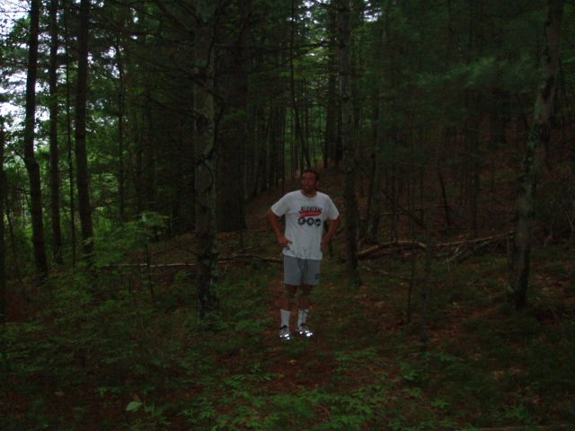
Just Nathaniel staying cautiously away from the
other hashers.
Smart, very smart.
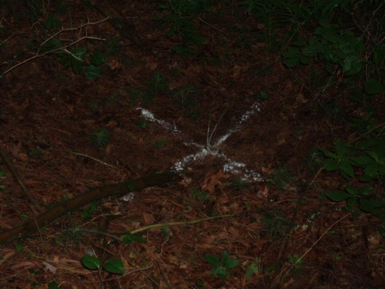
In case you missed it, false trail.
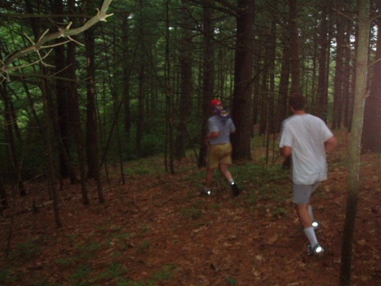
WHO is Just Nathaniel following?
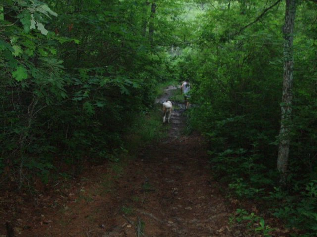
Repeat after me: "Rule #1, Never follow Basket."
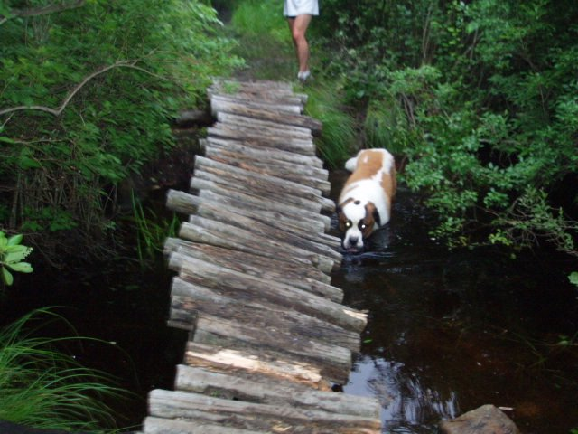
Seamus says, "Rule #2, See Rule #1."
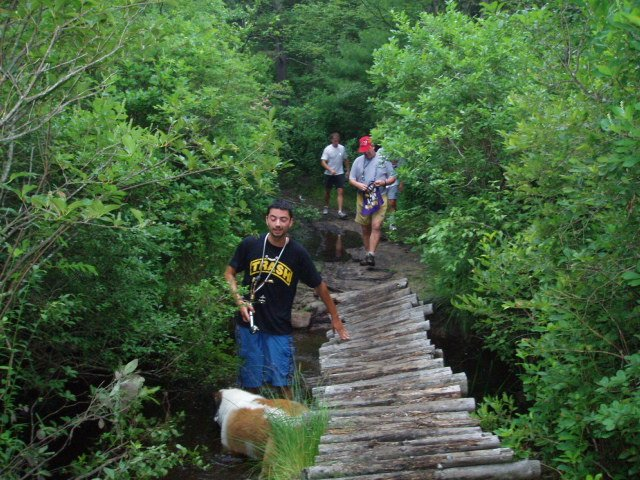
Mr. Beanie Weenie, so disappointed (and rightfully
so) about the lack of shiggy, decided to create his own.
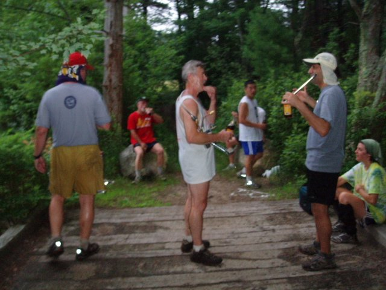
Yep, yep, yep, uh-huh, yep, uh-huh, uh-huh,
yep, yep, yep. Just give me a beer already ya wanker!
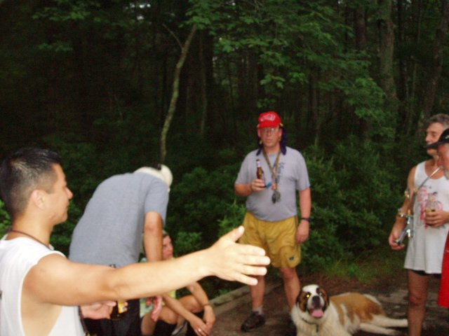
You should have been there! I caught a fish
THIS big!
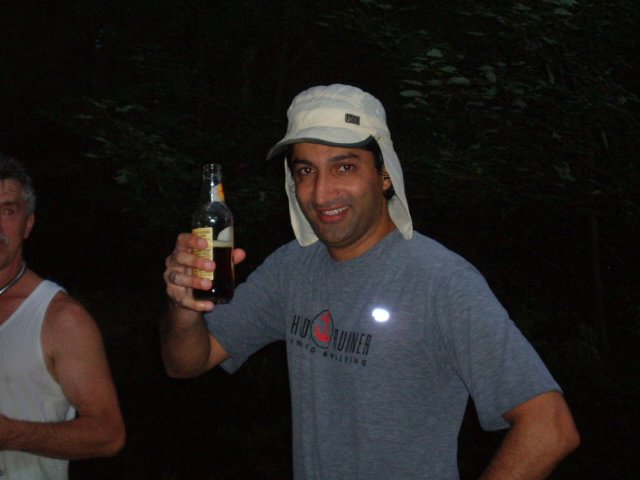
Is this the best hash or what?
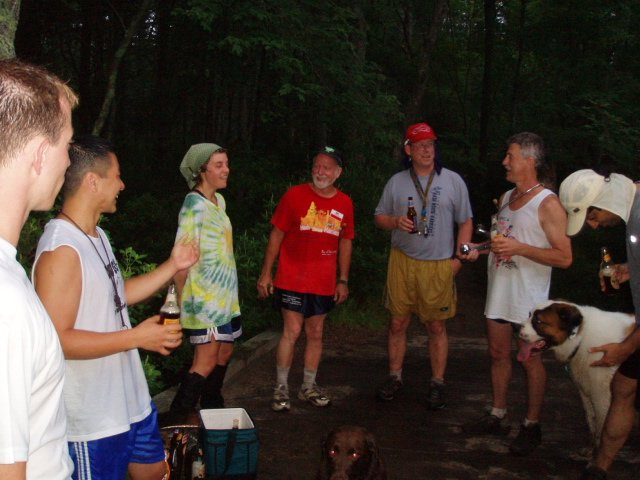
Sooooo, what's gonna make my rhubarb rise?
When will they ever learn?
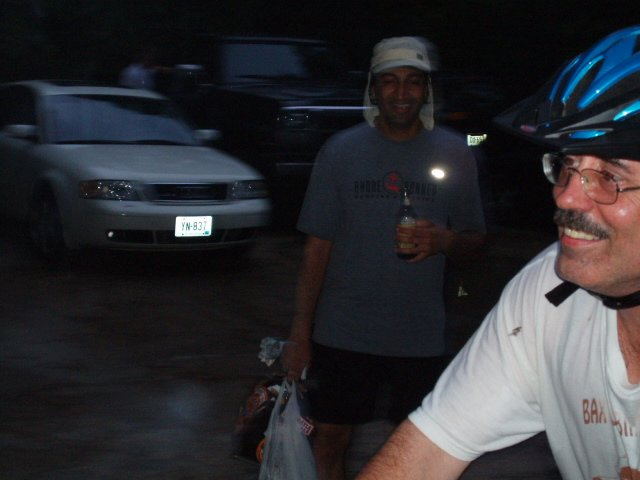
The bike hashers soon arrive at the circle,
unfortunately.
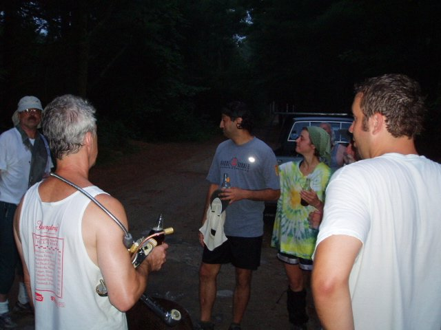
Basket liked his new hashit so much, he was
reluctant to give it up.
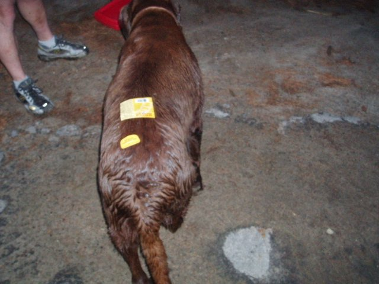
Nut brown ale anyone?
The original trio of hares still conspiring.
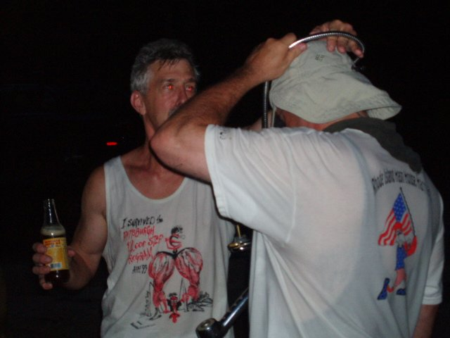
WIPOS earns the new hashit. Duh.
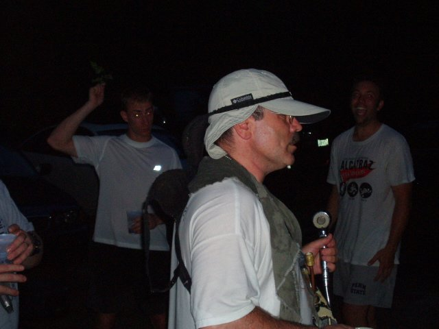
WIPOS is unsure what to do with the new hashit.
WIPOS, you don't know how to blow Bondo's appliance?
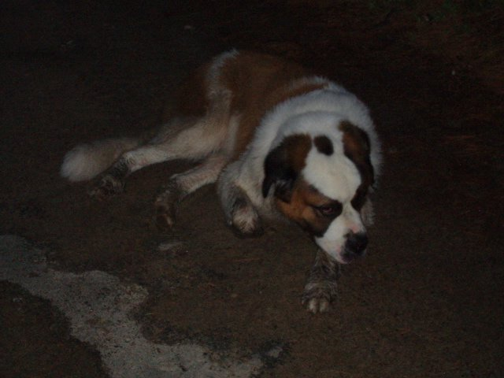
Seamus, unimpressed, as usual.
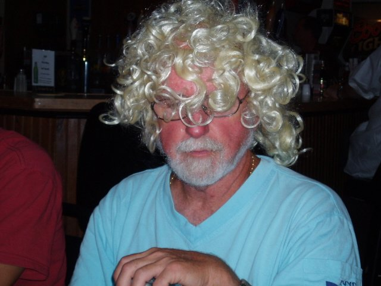
Just Rachael.

Can we get outta here already!
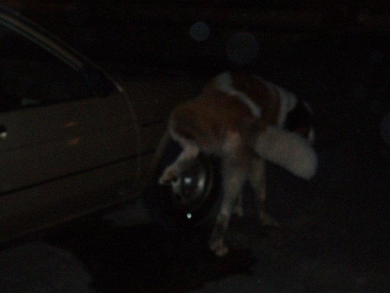
Hard to see, but this is how a real man takes
a piss. Basket, watch and learn.
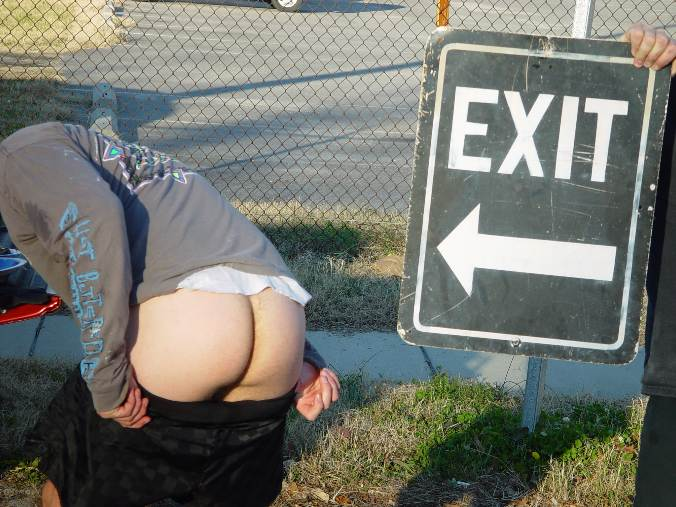
And a special thanks to Mr. Beanie Weenie
for all the great photos!
On On

Dry Foot Fairy